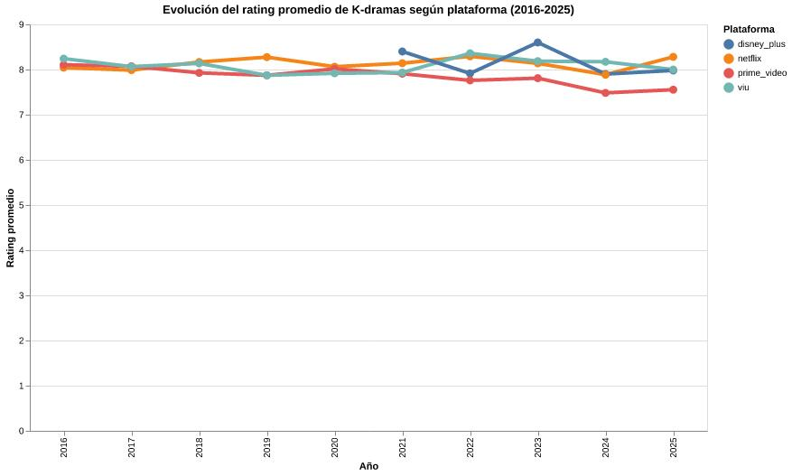

Por Celeste Elgueta
Durante la última década, los K-dramas dejaron de ser una producción orientada principalmente al mercado surcoreano para convertirse en uno de los fenómenos audiovisuales más consumidos a nivel global. El crecimiento de plataformas de streaming como Netflix, Disney+ y Prime Video transformó no solo la distribución de estas series, sino también la forma en que son evaluadas y consumidas por las audiencias internacionales.
Los datos analizados muestran una evolución sostenida en los ratings promedio de los K-dramas disponibles en plataformas digitales entre 2016 y 2025. Mientras los primeros años del período presentan una oferta más limitada y concentrada, a partir de 2020 se observa una expansión significativa del catálogo disponible en servicios de streaming. Este crecimiento coincide con la consolidación internacional de la industria cultural surcoreana, impulsada por el éxito global del K-pop, el cine coreano y las producciones originales distribuidas por plataformas internacionales.
Netflix aparece como una de las plataformas con mayor presencia durante gran parte del período analizado. Su estrategia de inversión en contenido coreano permitió ampliar el alcance global de los K-dramas y posicionarlos dentro del catálogo principal de entretenimiento internacional. Series originales y licencias exclusivas comenzaron a atraer audiencias fuera de Asia, generando un aumento en la visibilidad de este tipo de producciones y elevando el interés por nuevos estrenos año tras año.
Sin embargo, los datos también muestran que la competencia entre plataformas comenzó a intensificarse con el tiempo. Disney+ y Prime Video ingresaron más tarde al mercado de distribución de K-dramas, pero lograron mantener ratings promedio competitivos en comparación con servicios ya consolidados. Esto refleja cómo el crecimiento de la demanda internacional por contenido coreano motivó a distintas plataformas a invertir en licencias y producciones originales para captar nuevas audiencias.
Además de mostrar diferencias entre servicios de streaming, la evolución de los ratings evidencia cambios en las preferencias del público. Los K-dramas dejaron de ser considerados un nicho de consumo especializado para convertirse en parte del catálogo habitual de plataformas globales. La circulación internacional de estas producciones permitió que géneros como el romance, el thriller y la fantasía coreana alcanzaran niveles de popularidad comparables a los de series occidentales.
El aumento de la competencia también modificó las estrategias de distribución. Mientras algunas plataformas priorizaron la cantidad de títulos disponibles, otras apostaron por producciones exclusivas de alto impacto. Esto explica por qué ciertos años presentan variaciones importantes en los ratings promedio, especialmente en plataformas que incorporaron menos títulos, pero con evaluaciones más altas por parte de las audiencias.
La evolución de los ratings de K-dramas entre 2016 y 2025 no solo refleja cambios en la industria del entretenimiento coreano, sino también una transformación más amplia en el consumo cultural global. El streaming permitió que producciones antes limitadas por barreras geográficas y lingüísticas alcanzaran audiencias masivas en distintos países. Más que una tendencia pasajera, el crecimiento de los K-dramas demuestra cómo las plataformas digitales redefinieron la circulación internacional de contenidos audiovisuales durante la última década.
